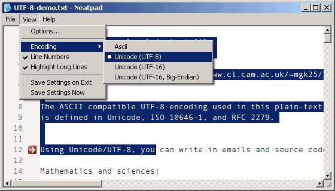
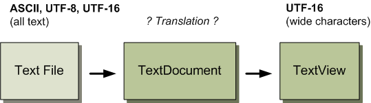
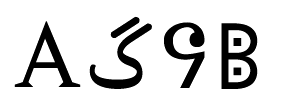
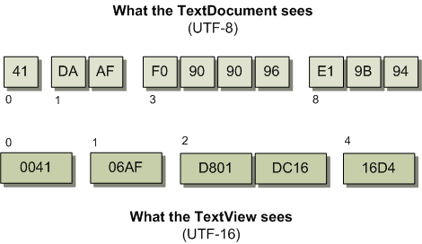
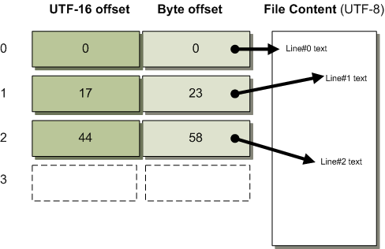

Unicode Text Processing
前回のチュートリアルでは、Unicodeテキストの保存に使用されるさまざまなエンコーディングフォーマットの概要を説明しました。今回は、この理論をNeatpadに応用してみましょう。そこで今回は、Unicodeテキストの処理をテーマにします。

上の画像は、Neatpadの新しい「エンコード」メニューオプションで、UTF-8ファイルを表示したものです。このチュートリアルの上部には、NeatpadのUnicode機能をテストするために使用できるUnicodeファイルのコレクションがあります。
Loading text files
Neatpadの以前のバージョンでは、単一のテキストエンコーディング、つまりプレーンASCIIテキストをサポートしていました。Unicode対応のテキストエディタは、当然ながら様々なUnicodeファイルフォーマットに対応していなければなりません。そこで、最初のステップとして、TextDocumentのinit()関数を変更して、どのような種類のファイルを開こうとしているのかを検出することにします。
もちろん、実際にファイルを開いて最初の数バイトを読むまでは、テキストファイルがどのようなエンコーディングを使用しているかを検出することはできません。ここでは、Unicodeでいうところの「バイト・オーダー・マーク」を利用します。これは、Unicodeテキストファイルの先頭にしか存在しない特定のバイト列で、これがあれば、ファイルの保存に使われた正確なエンコーディング方式がわかります。
| Byte Signature | Unicode Format | Neatpad Format |
| none | Plain ASCII/ANSI | NCP_ASCII |
| EF BB BF | UTF-8 | NCP_UTF8 |
| FF FE | UTF-16, little-endian | NCP_UTF16 |
| FE FF | UTF-16, big-endian | NCP_UTF16BE |
| FF FE 00 00 | UTF-32, little-endian | NCP_UTF32 |
| 00 00 FE FF | UTF-32, big-endian | NCP_UTF32BE |
この関数の目的は、TextDocument::initの間に読み込まれるテキストファイルの フォーマットを検出することです。この関数の目的は、TextDocument::initの間に読み込まれるテキストファイルの形式を検出することです。ファイルの署名がない場合、ファイルの内容はプレーンなASCII/ANSIテキストであると仮定します。
int TextDocument::detect_file_format(int *headersize);
この関数の唯一の仕事は、ファイルの最初のxバイトを分析して、上の表で定義されている様々なByte-Order-Markの値と比較することです。これは文字通り、フォーマットにマッチするまで一連のmemcmpを実行するタスクです。detect_file_format関数は、処理中のファイルの種類を示す適切なNCP_xxx値(Neatpad Codepage)を返します。
ファイルのテキストフォーマットは、TextDocument によって内部的に保存されています (メンバ変数 fileformat に)。Byte-Order-Markヘッダーの長さも、 headersizeメンバ変数に保存されています。これにより、どのような種類のファイルを読み込んでも、実際のコンテンツの始まりを常に特定することができます。
Internal text representations
ほとんどのテキストエディター（メモ帳など）は、テキストファイル全体をメモリに読み込みます。基本的なファイル形式（ASCII、UTF-8、UTF-16など）に関わらず、内容は作業しやすいように内部形式に変換されます。Windowsプログラムの場合、これは通常（常にではありませんが）、Windows NTのネイティブなUTF-16形式です。テキストベースのWindows APIは、すべてUTF-16/UCS2を扱うように設計されているので、これは理にかなっています。
というのも、メインのエディタ（OSのテキストルーチンと直接インタフェースをとる）のソースコードを1セット維持し、サポートする各フォーマットをロードおよびセーブするシンプルなファイルI/O変換ルーチンのセットを書くからです。エディタは、処理するテキストが常に一つのフォーマットであるため、非常にシンプルに保たれています。ファイルを元のフォーマットで保存しようとすると、テキスト全体が再び変換されて戻ってきます。
もちろん、この方法では、一度にファイル全体を読み込む必要があるため、大量のメモリを必要とします。数ギガバイト規模のテキストエディタという目標を達成するためには、ファイルを「生」の状態のままにしておき、必要に応じてファイルの特定の部分だけをメモリにマッピングする必要があります（このサイトのHexEditプログラムのように）。
しかし、これには問題があります。一つのプログラムで様々な形式のテキストを扱いながら、処理しなければならない様々なエンコーディングによって複雑にならないように、単一のコードベースを維持するにはどうすればよいのでしょうか？ここでは、2つの基本的な戦略を紹介します。
- 特定のファイル形式ごとに、TextView/TextDocumentの別バージョンを書きます。そして、遭遇するファイルの種類に応じて、TextViewの特定のインスタンス（例えば、TextViewUtf8 / TextViewUtf16）を作成します。マクロやC++のテンプレートを使って作業を楽にすることもできますが、この方法はコードメンテナンスの悪夢になると思います。絶対に避けてください。 !
- 常に「ネイティブ」フォーマット（Windowsの場合はUTF-16）のテキストを扱う汎用のTextViewを書きます。TextViewは基本的なファイルフォーマットを知らず、TextDocumentがTextViewの要求に応じて基本的なファイルフォーマットをUTF-16に変換することになるでしょう。
私は、#2の方法が最も自由度が高く、慎重に設計することでNeatpadに適したものになると考えています。
Generic text processing
一般的な」デザインの背景にある考え方は、TextViewは常にUTF-16テキスト（つまり標準的なワイド文字のUnicode文字列）を見て処理するということです。TextDocumentが読んでいる基礎的なファイルが、UTF-16テキスト以外のものであることは、まったく認識していません。つまり、TextViewが表示するためのテキストを要求するときはいつでも、基礎となるファイルの内容をUTF-16に（必要であれば）変換するのはTextDocumentに任されています（つまり、オンザフライでリアルタイムに）。

一方、TextDocument は「すべての」タイプのファイルフォーマットを理解します。私たちがサポートしているさまざまなエンコーディング（ASCII、UTF-8、UTF-16）の読み方を知っています。
このようなデザインは、Neatpadにとてもよく似合うと思います。ユーザーインターフェース（TextView）が非常に複雑になる可能性があるため、テキスト変換の問題をすべて一箇所に隔離して、一度だけ心配すればよいようにすることが非常に重要です。また、TextDocumentにさらなるテキストフォーマット（UTF-32など）を追加しても、TextViewを変更する必要がないという利点もあります。TextViewはUTF-16だけを気にすればいいのです。
Two coordinate systems
この「汎用」テキストモデルへの移行を決めたことで、大きな問題が発生しました。というのも、TextViewとTextDocumentの2つの座標系を考慮しなければならないからです。現時点では、「とりあえずUTF-16をサポートして、後からUTF-8を追加する」ということも可能ですが、それは間違いです。単一フォーマット」のエディタの設計は、任意のファイルフォーマットを扱わなければならないエディタとは非常に異なっており、より一般的な設計に移行しなければ、後になってさらに大きな問題を引き起こすことになります。
そこで、TextViewはUTF-16単位でのみ動作することにしました。これは良いことだと思います。これは基本的に、TextViewコントロールの「ユーザーインターフェース」全体が、WindowsのNative Unicodeフォーマットであることを意味します。このことがどれほど重要か、過小評価しないでください。まだ、ここまでは進んでいませんが、C++プロジェクトでTextViewコントロールを使う「ユーザー」（つまりプログラマー）を想像してみてください。
このプログラマーのプロジェクトは当然Unicodeであり、すべてのテキスト操作もUTF-16になります。カーソルの位置や選択範囲の管理、特定のオフセットでのテキストの取得や設定、テキストの検索など、TextViewの操作もUTF-16でなければなりません。ユーザーやプログラマーは、テキストファイルの基本フォーマットが何であるかを気にせず、彼らが見る世界はすべてUTF-16であり、すべての操作はこの世界観に一致しなければなりません。したがって、カーソルオフセットや選択オフセット、つまりコントロールの座標「フロントエンド」全体が、UTF-16ベースでなければなりません。しかし、ここで問題が発生します。
TextDocumentは、物事に対する考え方が異なります。TextDocumentは任意のファイルフォーマットを扱う必要があり、テキストファイルがどのようなフォーマットであるかは、読み込むまでわかりません。シングルバイト形式（ASCII）、マルチバイト形式（UTF-8）、ワイドキャラク タ形式（UTF-16）のいずれかを扱うことができます。TextDocumentは、これらのフォーマットに共通する座標系を使用しなければなりません。もちろん、これはバイト指向のシステムですから、すべてのラインオフセットとテキストアクセスはバイトベースでなければなりません。
このTextViewとTextDocumentの違いを説明するために、いくつかのUnicodeテキストの簡単な例を見てみましょう。
|  |
U+0041 LATIN CAPITAL LETTER
U+06AF ARABIC LETTER GAF
U+16D4 RUNIC LETTER DOTTED-P
U+10416 DESERAT CAPITAL LETTER JEE
上のテキストは、4つのユニコード文字をランダムに集めたもので、ユニコードのコードポイントの値が横に記載されています。これらの文字が Neatpad とどのように関連しているかを見るために、上のテキストが UTF-8 としてエンコードされ、Neatpad に読み込まれたと想像してみましょう。したがって、TextDocumentは、UTF-8のマルチバイト単位で動作することになります。

もちろん、TextViewはファイルをUTF-16として見ています。この図では、TextViewが基礎となるファイルからどれだけ分離されているかを説明しています。最初の文字（'A'）を除いて、TextViewが見る生のデータは、実際にディスク上に表示されるものとは全く異なります。覚えておいてほしいのは、これらのことはすべて、ファイル読み込みプロセス中ではなく、リアルタイムで行われるべきだということです。
しかし、まだ問題は解決していません。TextViewはUTF-16を話し、TextDocumentはバイトオフセットを話します。私たちは、UTF-16のオフセット（すなわちコードユニットのオフセット）と、基礎となるファイルコンテンツ（それが何であれ）との間のマッピングを実行するために、何らかのメカニズムを考案する必要があります。この作業はTextDocumentに任されており、すべてのハードワークを行うのはラインオフセッ トバッファである。
Reading Unicode data
The decision to make the TextView UTF-16 only means that our TextDocument::getline routine must change. Remember that this is the main “gateway” between the TextView and the TextDocument. Let’s look at what we had before:
ULONG TextDocument::getline(ULONG lineno, ULONG offset, char *buf, size_t len, ULONG *fileoff)
TextViewをUTF-16にすることは、TextDocument::getlineルーチンを変更しなければならないことを意味します。これは、TextViewとTextDocumentの間の主要な「ゲートウェイ」であることを覚えておいてください。それでは、以前の状態を見てみましょう。
2つ目の変更点は、行指向のテキスト検索モデルからの脱却です。現在私たちが持っているのは、getline の代わりとなるもので、TextDocument::gettext と呼ばれています。この新しいルーチンの目的は、現在のファイル内の指定されたバイトオ フセットから UTF-16 テキストを返すことです。
int TextDocument::gettext(ULONG offset, ULONG maxbytes, TCHAR *buf, int *buflen)
基礎となるテキストフォーマットに関係なく、このルーチンは常に UTF-16 データを返します (Unicode ビルドの場合)。テキストは buf パラメータに格納され、buf に格納された「文字」の数が *buflen パラメータに返される。
TCHAR buf[200];
int buflen = 200;
// read a block of text as UTF-16 from the specified position
len_bytes = textDoc->gettext(byte_offset, max_bytes, buf, &buflen);
// adjust offsets ready for next read
off_bytes += len_bytes;
max_bytes -= len_bytes;
つまり、戻り値は、UTF-16への変換時に処理されたASCII/UTF-8/UTF-16のバイト数を表しています。これは、基礎となるファイルの「バイト位置」を把握するために必要です。
TextViewがUTF-16のデータを読んでいても（カーソルの位置などにUTF-16ベースのオフセットを使っていても）、バイトオフセットを使って基礎となるファイルにアクセスしなければなりません。これは、テキストの検索を、基礎となるファイルへの直接的なアクセスにするためで、バイトオフセットにあるデータを何でもUTF-16に変換します。もし、UTF-16の座標を使ってファイルの内容にアクセスすると、長い処理を行ってこの文字オフセットをバイトオフセットに変換する必要があります。
新しい TextDocument::gettext 関数は、以前のものより少し複雑になっています。
int TextDocument::gettext(ULONG offset, ULONG lenbytes, WCHAR *buf, int *buflen)
{
BYTE *rawdata = buffer + headersize + offset;
switch(fileformat)
{
case NCP_ASCII:
return ascii_to_utf16(rawdata, lenbytes, buf, len);
case NCP_UTF8:
return utf8_to_utf16(rawdata, lenbytes, buf, len);
case NCP_UTF16:
return copy_utf16(rawdata, lenbytes/sizeof(WCHAR), buf, len);
case NCP_UTF16BE:
return swap_utf16(rawdata, lenbytes/sizeof(WCHAR), buf, len);
default:
*len = 0;
return 0;
}
}
TextDocument::fileformat のメンバー変数を使って、基礎となるテキストをどのように UTF-16 に変換するかを決めなければなりません。サポートするテキストの種類ごとに1つの変換ルーチンがあることに注意してください。
ここでは詳しく説明していませんが、一つだけ触れておきたいのは、実際のUTF-16への変換処理です。UTF-16に変換する際には、UTF-16のサロゲートペアを誤って「分割」しないように細心の注意を払う必要があります。これは、UTF-8から変換するときに、サロゲート文字の両方を格納するためのバッファスペースが足りなくなってしまう可能性があるからです。変換ルーチンはすべて、サロゲートペアが一緒に保たれるようにしています。
Problems with MultiByteToWideChar
お気づきかもしれませんが、TextDocument::gettext 関数の中に私自身の Unicode 変換ルーチンを書いています。私は本当は MultiByteToWideChar API を使って UTF-16 への変換をすべて行いたかったのです。残念ながら、そんなに簡単なことはありません。MultiByteToWideChar は有効な UTF-8 データの変換には優れていますが、不正なテキストシーケンス（不正なシーケンスやオーバーロングのシーケンスなど）に関してはあまり得意ではありません。
この種のデータを処理する場合、テキスト エディターにとって望ましい動作は、UTF-8/UTF-16 の無効なシーケンスを特殊な Unicode 文字、「U+FFFD Unicode Replacement Character」を使用して示すことです。MultiByteToWideCharの問題点は、無効なシーケンスに対してこの変換を行わないことです。つまり、失敗したと返すだけで、何文字が無効だったのかわからないのです。これでは、どこで変換を再開すればいいのかわからないので、変換処理を再開することができません。
独自のルーチンを書くことで、有効なデータと無効なデータの両方を、テキストストリーム処理に適した方法、つまりテキストエディタに適した方法で処理することができました。
Line Buffer Management
Unicodeと「二重座標系」に変更するということは、これまでのシリーズで開発してきたラインバッファ方式を見直す必要があります。このシリーズの後半で「ギガバイトファイルのサポート」を追加する際には、またこの方式を変更することになるのは十分承知しているので、ここではあまり詳しく説明しないことにする。しかし、これは今すぐにでも議論する必要があるので、ここで説明します。
Neatpadのラインバッファには2つの目的があります。第一に、ファイル内でテキストの行の物理的な位置をすばやく特定する方法を提供します。これは、ファイルの内容への「ランダムアクセス」のようなものです。ラインバッファの2つ目の目的は、逆の操作を行うことです。つまり、物理的な「カーソルのオフセット」が与えられると、どの行にこのオフセットが含まれているかを調べるのです。
TextViewの座標系がUTF-16になったので、line-bufferのデザインを見直す必要があります。問題は、テキストの行がファイル内のどこにあるのかを知る必要があるため、ラインバッファをUTF-16座標に変更するだけでは済まないことです。もちろん、メモ帳のような「単一フォーマット」のエディタではこのルートを使いますが、複数のファイルフォーマットをサポートしなければならないため、real__physical locationを扱う必要があります。
私が行ったことは、TextDocumentに2つ目のラインバッファを追加したことです。つまり、元のラインバッファは、ファイル内の各行の開始位置の実際の物理的なバイトオフセットを保持しています。新しいラインバッファは各行の開始位置を記録しますが、今回は情報をバイトオフセットではなくUTF-16オフセット（文字位置）として保存します。基礎となるファイルがUTF-8であっても、この2つ目のラインバッファは、各行のオフセットがUTF-16としてエンコードされているかのように格納します。
下の図は、私が説明しようとしていることをうまく説明してくれるはずです。

Unicodeに移行したことで、さらに別の問題が発生しました。それは、これらの余分なフォーマットを持つ「行頭」オフセットで、どのようにラインバッファを初期化するかということです。これまでは、CR/LFの組み合わせを検索する方法として、単純なバイト検索を行っていました。残念ながら、この方法はマルチフォーマットのテキストエディタではもはや十分ではありません。
これ以上、「\r」や「\n」のバイトサーチをしても、うまくいかないでしょう。ASCIIやUTF-8では問題ありませんが（バイトベースであることに変わりはなく、CL/LFも同様です）、UTF-16では問題があります。ASCIIのCR-LFの配列（0x0Dの後に0x0Aが続く）は、Unicodeでは実際には「U+0D0A MALAYALAM LETTER UU」となります。UTF-16のテキストファイルを処理する際には、U+0x000DとU+0x000Aを特別に検索しなければなりません。
また、Unicodeでは、独自の改行コードポイントと改段落コードポイントが定義されています。U+2028 LINE SEPARATOR」と「U+2029 PARAGRAPH SEPARATOR」です。しかし、テキストファイルではいまだにCR/LF配列が使われているので、これらの規則をすべてサポートする必要があります。
テキストの行を解析してラインバッファを構築するには2つの方法があります。1つ目は、サポートするフォーマットごとに別々のルーチンを書くことです。これは、処理速度の点では最も効率的なアプローチかもしれませんが、コードのメンテナンス性の点では、間違いなく最も効率的ではありません。Neatpadが完成したら、この方法を検討するかもしれませんが、今は次の方法がいいと思います。
簡単に言えば、当面は汎用のラインパーシングルーチンを使うのが良い方法です。TextDocument::init_linebufferはそのままで、CR/LFシーケンスを検索しながら、1文字ごとにファイルを処理します。違いは、ファイルがUTF-32文字のストリームに変換されることで、あらゆる形式のテキストを扱えるようになります。
Text Iteration
これはかなり複雑になっていると思われるかもしれませんが、その通りです。主な複雑さは、TextViewがUTF-16の文字オフセットを扱うのに対し、TextDocumentがバイトオフセットを扱うことに起因します（既にご存知の通りです）。TextViewは常にTextDocumentからUTF-16のテキストを取得しますが、それでもバイトオフセットを使って行わなければなりません。これは非常にすっきりした解決策ではありません。
この問題を解決するために、私は TextIterator という 3 番目の C++ クラスを導入しました。このクラスの目的は、TextViewの座標系と、TextDocumentが理解する基本的なファイルフォーマットとの間に「橋渡し」をすることです。つまり、TextViewがDocumentに直接テキストを要求することはなくなり、テキストの取得はすべてIteratorを経由することになります。
class TextIterator
{
friend class TextDocument;
public:
int gettext(WCHAR *buf, int len);
private:
// only "friends" of the TextIterator can create them
TextIterator(ULONG off, ULONG len, TextDocument *doc);
// keep track of position within the specified TextDocument
TextDocument * text_doc;
ULONG off_bytes;
ULONG len_bytes;
};
ご覧のとおり、TextIteratorのクラス定義はとてもシンプルです。これは、使用するTextDocumentと、そのドキュメント内のバイトオフセットを記録するものです。これらの値は、TextIteratorが構築されるときに設定されます。実際に有用なことをする唯一のコードは、以下の TextIterator::gettext 関数です。
int TextIterator::gettext(WCHAR *buf, int buflen)
{
// get text from the TextDocument at the specified byte-position
int len = text_doc->gettext(off_bytes, len_bytes, buf, &buflen);
// adjust the iterator's internal position
off_bytes += len;
len_bytes -= len;
return buflen;
}
TextIterator は基本的に、バイトベースのファイルオフセットの詳細をカプセル化し、TextView から隠します。また、TextDocument には、行反復を開始するための関数がひとつ追加されています。
TextIterator TextDocument::iterate_line(ULONG lineno, ULONG *linestart, ULONG *linelen)
{
ULONG offset_bytes;
ULONG length_bytes;
lineinfo_from_lineno(lineno, linestart, linelen, &offset_bytes, &length_bytes);
return TextIterator(offset_bytes, length_bytes, this);
};
interate_line 関数は、独立した TextIterator オブジェクトを返し、これを使ってファイルのテキストに透過的にアクセスすることができます。この新しいクラスを使ったテキストイテレータの例を以下に示します。
TextIterator itor = m_pTextDoc->iterate_line(100);
WCHAR buf[200];
int len;
len = itor(buf, 200);
プロセスがいかにシンプルになったかがわかると思います。TextView は TextIterator を通してファイルの内容にアクセスします。TextViewに関する限り、すべてはライン/キャラクタオフセットに基づいています。厄介なバイトオフセットや変換の詳細は Iterator と TextDocument に隠されており、まさに私たちが望む方法です。
おそらく、他の問題が発生したときにはまたデザインを変更することになると思いますが（双方向テキストや複雑なスクリプトで頭痛の種になることが予想されます）、今のところ、ここで説明したTextView/TextIterator/TextDocumentのデザインはうまく機能しているようです。
Additions to Neatpad
実際のNeatpadアプリケーションの変更点について簡単に触れておきます。3つのことを追加しました。一つ目は、コマンドラインのサポートです。コマンドラインでテキストファイルを指定することができるようになりました（メモ帳のように）。
2つ目の追加機能は、シェルメニューのサポートです。Neatpadのオプションには、すべてのファイルタイプについて、エクスプローラのシェルコンテキストメニューにエントリを追加するための新しい設定があり、任意のファイルを右クリックして「Neatpadで開く」を選択することができます。私は、新しいシステムを構築するときには、いつもメモ帳にこのエントリを追加していますが、Neatpadにも同じ（自動的な）機能があれば、私の意見では非常に便利です。
最後の追加機能は、ウィンドウ位置の永続性です。メモ帳では、終了するたびにウィンドウの位置が保存され、次回起動時には保存された位置に復元されることにお気づきでしょう。Neatpadは、アプリケーション全体ではなく、個々のファイルのウィンドウ位置を保存します。つまり、Neatpadで別のファイルを開いたり閉じたりしても、それぞれが画面上の自分の位置を覚えているということです。
その方法は、「NTFS代替データストリーム」を使用することでした。NTFSストリーム」がWindows NTで初めて登場して以来、私はその使い道を探し続けてきましたが、私は完璧な使い道を見つけたと思っています。ファイルを開くたびに、そのファイルに添付されたNTFSスチーム(Neatpad.WinPosと呼ばれる)も開かれる。WINDOWPLACEMENT構造体はこのストリームに保存されているので、ファイルが開かれると、保存された構造体を使ってSetWindowPlacement APIが呼び出されます。そして、ファイルが閉じられると、Neatpadの現在のウィンドウ位置が取得され、メインファイルのNeatpad.WinPosストリームに保存されます。
Coming up in Part 10
Unicodeの問題は、なかなか難しいことがわかりました。実際、ここで紹介する解決策にたどり着くまでに、TextView/TextDocumentクラスを何度も書き直しました。これは、解決に時間がかかった理由の1つであり、もう1つの理由は、開始する前に、Unicodeにまつわるすべての問題を理解するために、多くの背景資料を読まなければならなかったことです。
この本は一読の価値があり、ここでは紹介しきれないほど多くのUnicodeのトピックを扱っています。Unicode 3.0と4.0の間の変更点は非常に少なく、基本的には文字レパートリーの追加などに限られています。
第10回に続きます。次のチュートリアルでは、Unicodeテキストの適切な表示について説明します。今のところ、私が実際に行っているのは、NeatpadをUTF-8とUTF-16のエンコーディングフォーマットをサポートする「ワイドキャラクタ」テキストビューアにすることだけですので、ご了承ください。現在、私たちは「ユニコード」Windows API（特にTextOutW）を使用していますが、本当のユニコードエディタになるにはまだ遠い道のりです。複雑なスクリプト、結合文字、双方向テキストはまだサポートされていません。Unicodeテキストを表示するには、単にTextOutWを呼べばいいと思っていた方、考え直してください。Unicodeテキストの表示は非常に複雑な問題で、TextOutだけでは解決できません。
そこで、次のチュートリアルでは、Uniscribe APIに焦点を当てます。この API（Windows 2000 から利用可能）は、複雑なスクリプトや双方向テキストの表示をサポートします。Uniscribeの動作方法のために、Neatpadのテキスト表示エンジンを少し設計し直さなければならず、また、マウス入力と選択のルーチンも修正しなければなりませんが、次のチュートリアルの後には、Unicodeのサポートという点で、非常に良い状態になっていることを期待しています。